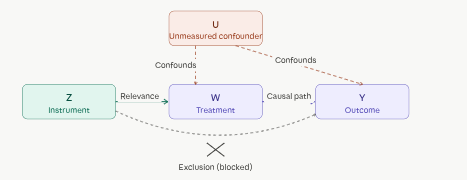
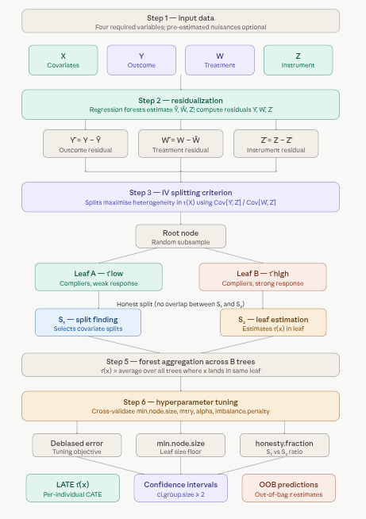
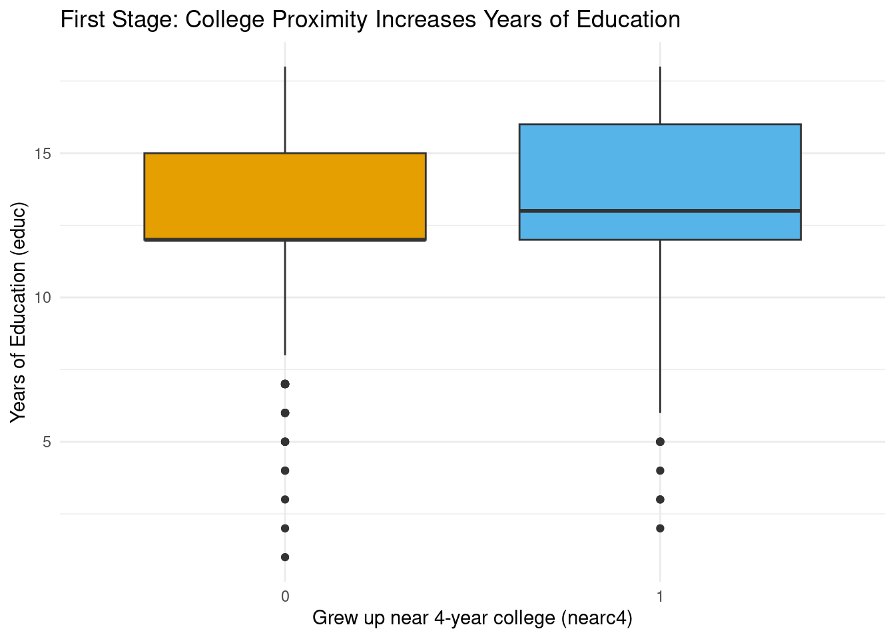
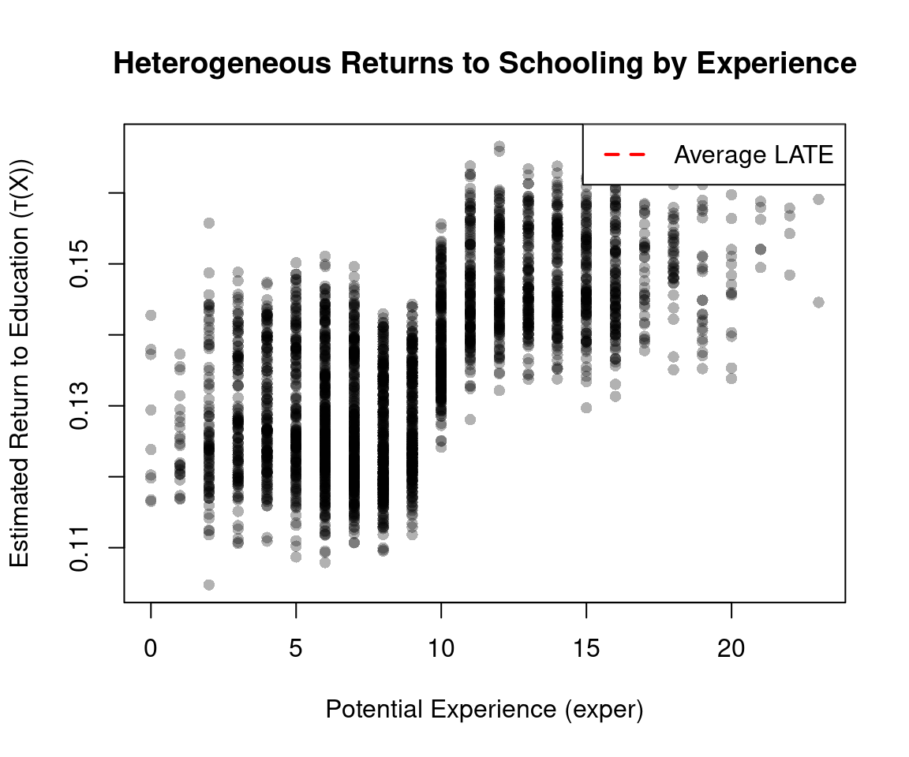
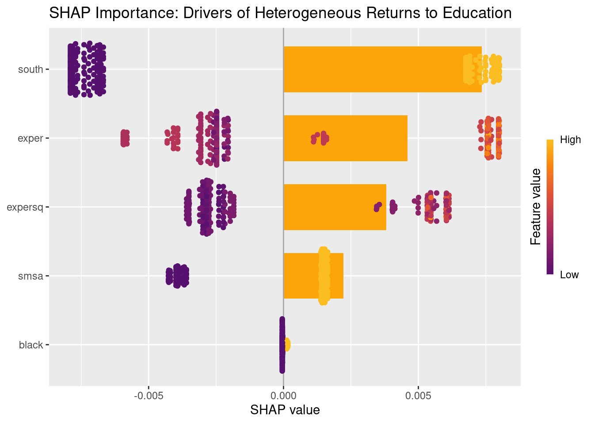
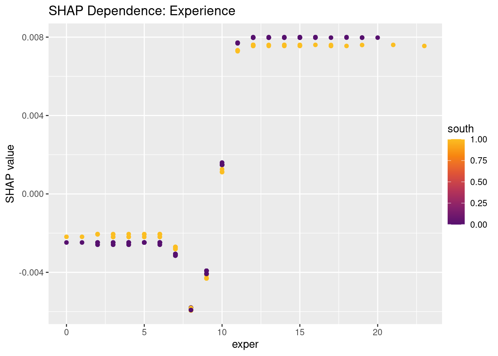
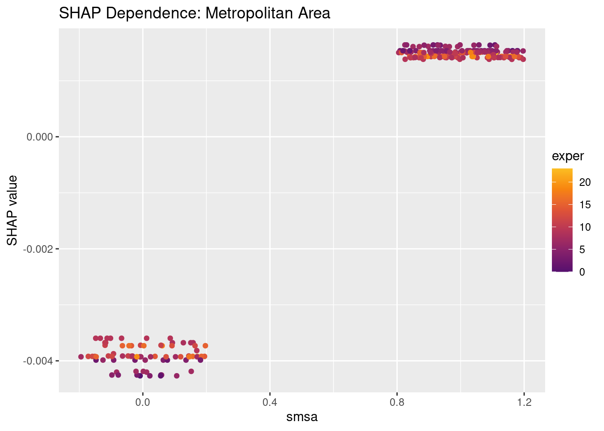

Code
packages <- c(
"tidyverse",
"plyr",
"RCausalML",
"haven",
"car"
)
This section introduces the Instrumental Forest, a powerful method for estimating heterogeneous treatment effects in settings where treatment assignment is endogenous. We will cover the key concepts, how the method works, and provide a practical implementation using R. The example focuses on estimating the causal effect of education on wages using proximity to college as an instrument, a classic application in econometrics. By the end of this section, you will understand how to use Instrumental Forests to estimate treatment effects while addressing endogeneity concerns.
An Instrumental Forest estimates heterogeneous treatment effects in settings where treatment assignment is endogenous — meaning it’s correlated with unobserved factors that also affect the outcome, making naive comparisons biased. The solution is an instrumental variable (IV): a variable \(Z\) that shifts who receives treatment but has no direct path to the outcome except through the treatment.
The forest estimates the Conditional Local Average Treatment Effect (LATE):
\[\tau(X) = \frac{\text{Cov}[Y,\, Z \mid X = x]}{\text{Cov}[W,\, Z \mid X = x]}\]
Intuitively, the numerator captures how much \(Z\) moves the outcome; the denominator captures how much \(Z\) moves the treatment. Their ratio isolates the causal effect of treatment on outcome — purged of confounding — for individuals with covariate profile \(X = x\).
When \(Z = W\) (the instrument equals the treatment itself, as in a clean randomized trial), the Instrumental Forest collapses to a standard Causal Forest.
An instrumental variable (IV) is a tool used in statistics and econometrics to estimate causal relationships when a randomized controlled trial is not feasible, or when there is concern about endogeneity—i.e., when the treatment or exposure variable is correlated with unobserved factors that also affect the outcome. IV methods help isolate the causal effect of a treatment (or independent variable) on an outcome by leveraging an external variable, called the instrument, that influences the treatment but does not directly affect the outcome except through the treatment.
The Conditional Local Average Treatment Effect (LATE) is a causal effect measure used in instrumental variable (IV) analysis to estimate the effect of a treatment (or exposure) on an outcome for a specific subpopulation, known as the “compliers,” conditional on a set of covariates \(X\). It extends the Local Average Treatment Effect (LATE) by allowing the treatment effect to vary across different values of covariates, making it particularly useful in heterogeneous treatment effect estimation. :::
Endogeneity occurs when treatment \(W\) is correlated with unmeasured factors \(U\) that also affect \(Y\) — for example, sicker patients self-selecting into treatment. This invalidates simple comparisons.
Instrumental variable requirements: (1) Relevance — \(Z\) must meaningfully predict \(W\); (2) Exclusion restriction — \(Z\) affects \(Y\) only through \(W\), not directly; (3) Independence — \(Z\) is as good as randomly assigned conditional on \(X\).
Compliers are the subpopulation whose treatment status actually changes because of \(Z\). LATE is the treatment effect specifically for compliers — not for always-takers or never-takers.
Residualization removes confounding signal before splitting. The forest works with residuals \(Y - \hat{Y}\), \(W - \hat{W}\), and \(Z - \hat{Z}\) (estimated via regression forests), so splits focus purely on treatment effect heterogeneity.
Honesty separates the data subsample used to find splits from the subsample used to estimate effects in each leaf, preventing overfitting.
The diagram below shows the structural logic of IV: \(Z\) reaches \(Y\) only through \(W\) (the two solid arrows), while the dashed confounder paths from \(U\) are bypassed entirely.

Now the full pipeline:

A few things worth highlighting from the pipeline:
Step 2 (residualization) is the critical differentiator from a plain causal forest. By subtracting estimated conditional means \(\hat{Y}\), \(\hat{W}\), \(\hat{Z}\) before splitting, the forest’s splitting criterion is de-correlated from confounders. This is the forest-based analogue of the first stage in two-stage least squares (2SLS).
Step 3 uses a ratio-based splitting criterion — rather than just maximizing variance in outcomes, each candidate split evaluates \(\text{Cov}[\tilde{Y}, \tilde{Z}] / \text{Cov}[\tilde{W}, \tilde{Z}]\) in child nodes. A split is only made if it creates meaningfully different causal effects, not just different raw outcomes.
Step 6 (tuning) matters more here than in standard forests. IV estimation is noisier than direct outcome prediction — weak instruments amplify estimation variance, so settings like min.node.size and imbalance.penalty need careful calibration. The imbalance.penalty parameter specifically guards against splits that create leaves with very unequal instrument variation, which would degrade the IV estimate.
Endogeneity Correction: By using an instrument, the forest corrects for biases due to unmeasured confounders, unlike standard regression or causal forests
Heterogeneous Effects:It captures how treatment effects vary across subgroups defined by covariates (X), making it suitable for personalized medicine, targeted marketing, etc
Challenges:
Requires a valid instrument (\(Z\) must affect \(W\) but not \(Y\) directly, except through \(W\)).
Sensitive to tuning parameters, which can significantly impact performance.
Computationally intensive, especially for large datasets or when tuning is involved.
Applications: Used in fields like economics, medicine, and policy evaluation to estimate causal effects in observational data studies, such as the effect of early surgery on patient outcomes or laparoscopic colectomy in hospitals
Both Instrumental Forests and Causal Forests are machine learning methods within the Generalized Random Forests (GRF) framework, implemented in the grf package in R, designed for estimating causal effects* in observational data or experimental settings. They aim to estimate heterogeneous treatment effects (i.e., how the effect of a treatment varies across subgroups defined by covariates). However, they differ in their assumptions, use cases, and how they handle endogeneity. Below is a detailed comparison of Instrumental Forestsand Causal Forests, including their differences, similarities, and when to use each.
| Aspect | Causal Forest | Instrumental Forest |
|---|---|---|
Purpose |
Estimates CATE for a treatment assuming unconfoundedness. | Estimates LATE using an instrumental variable to address endogeneity. |
Key Assumption |
Unconfoundedness: Treatment assignment \(W\) is independent of potential outcomes \(Y(0), Y(1)\) given covariates \(X\). | Valid instrument: \(Z\) affects \(W\), not \(Y\) directly (exclusion restriction), and is uncorrelated with confounders (independence). |
Treatment (W) |
Binary or continuous, assumed exogenous (random or conditionally random given \(X\)). | Binary or continuous, potentially endogenous (affected by unobserved confounders). |
Instrument (Z) |
Not required (assumes \(W = Z\)). | Required: A variable that influences \(W\) but not \(Y\) except through \(W\). |
Endogeneity |
Cannot handle unobserved confounding. | Explicitly addresses unobserved confounding via the instrument. |
Estimation Formula |
\(\tau(X) = E[Y(1) - Y(0) | X = x]\) | \(\tau(X) = \frac{\text{Cov}[Y - \hat{Y}, Z - \hat{Z} | X = x]}{\text{Cov}[W - \hat{W}, Z - \hat{Z} | X = x]}\) |
Use Case |
Randomized experiments or observational studies with strong unconfoundedness. | Observational studies with endogeneity or imperfect compliance in experiments. |
Output |
CATE for the entire treated population. | LATE for the subpopulation of compliers (those whose ( W ) is influenced by ( Z )). |
This tutorial demonstrates how to implement an Instrumental Forest using the grf package wrapped with {RCausalML} package in R, focusing on estimating treatment effects in a hypothetical scenario using the lung dataset. We will use card dataset for focusing on estimating the causal effect of education on wages using proximity to college as an instrument—a classic IV application (Card, 1995).
Following R packages are required to run this notebook. If any of these packages are not installed, you can install them using the code below:
tidyverse, plyr, RCausalML, haven, car
packages <- c(
"tidyverse",
"plyr",
"RCausalML",
"haven",
"car"
)# Install missing packages
# new_packages <- packages[!(packages %in% installed.packages()[, "Package"])]
# if (length(new_packages)) install.packages(new_packages)# Load packages with suppressed messages
invisible(lapply(packages, function(pkg) {
suppressPackageStartupMessages(library(pkg, character.only = TRUE))
}))# Check loaded packages
cat("Successfully loaded packages:\n")Successfully loaded packages: [1] "package:car" "package:carData" "package:haven"
[4] "package:RCausalML" "package:plyr" "package:lubridate"
[7] "package:forcats" "package:stringr" "package:dplyr"
[10] "package:purrr" "package:readr" "package:tidyr"
[13] "package:tibble" "package:ggplot2" "package:tidyverse"
[16] "package:stats" "package:graphics" "package:grDevices"
[19] "package:utils" "package:datasets" "package:methods"
[22] "package:base" We’ll estimate the causal effect of education on wages using proximity to college as an instrument—a classic IV application (Card, 1995).
Key variables:
lwage = log(wage) — outcome (Y)educ = years of education — endogenous treatment (W)nearc4 = binary: grew up near 4-year college (instrument Z)exper = potential work experienceexpersq = experience squaredblack = binary: Blacksmsa = binary: lives in SMSA (standard metropolitan statistical area)south = binary: lives in South# Direct download from known reliable source (Stata .dta format)
card_url <- "https://storage.googleapis.com/causal-inference-mixtape.appspot.com/card.dta"
card <- read_dta(card_url)
# Create experience squared (often used in Mincerian wage equations)
card <- card %>%
mutate(expersq = exper^2) %>%
select(lwage, educ, nearc4, exper, expersq, black, smsa, south) %>%
na.omit()
# Convert to matrix for grf (X must be numeric matrix)
X <- card %>%
select(exper, expersq, black, smsa, south) %>%
as.matrix()
Y <- as.numeric(card$lwage) # Outcome: log wage
W <- as.numeric(card$educ) # Treatment: years of education
Z <- as.numeric(card$nearc4) # Instrument: near 4-year college Estimate Std. Error t value Pr(>|t|)
3.373208e-01 8.250044e-02 4.088715e+00 4.451508e-05 # F-statistic for instrument strength (should be >10 for strong IV)
linearHypothesis(first_stage, "nearc4 = 0")
We use instrumental_forest() from the grf package to estimate heterogeneous returns to education (conditional LATE τ(X)).
# Train the instrumental forest
iv_forest <- instrumental_forest(
X = X,
Y = Y,
W = W,
Z = Z,
num.trees = 1000, # Reduced for speed; use 2000+ in production
honesty = TRUE,
tune.parameters = "all" # Auto-tune important hyperparameters
)
iv_forestGRF forest object of type instrumental_forest
Number of trees: 1000
Number of training samples: 3010
Variable importance:
1 2 3 4 5
0.297 0.274 0.007 0.115 0.185 # Out-of-bag predictions (for training data)
iv_pred <- predict(iv_forest)
tau_hat <- iv_pred$predictions # Estimated conditional LATE τ(X)
# Average treatment effect (doubly robust / average over forest)
ate <- average_treatment_effect(iv_forest)
cat("Average Treatment Effect (LATE):", round(ate$estimate, 3),
"+/-", round(1.96 * ate$std.err, 3), "\n")Average Treatment Effect (LATE): NaN +/- NA # Plot heterogeneous effects vs experience (example)
plot(card$exper, tau_hat, pch = 16, col = rgb(0,0,0,0.3),
xlab = "Potential Experience (exper)", ylab = "Estimated Return to Education (τ(X))",
main = "Heterogeneous Returns to Schooling by Experience")
abline(h = ate$estimate, col = "red", lwd = 2, lty = 2)
legend("topright", legend = "Average LATE", col = "red", lwd = 2, lty = 2)
# Example: Predict for a hypothetical individual
new_data <- data.frame(
exper = 10,
expersq = 10^2,
black = 0,
smsa = 1,
south = 0
)
new_pred <- predict(iv_forest, newdata = as.matrix(new_data))
cat("Predicted return to education (LATE) for this profile:", round(new_pred$predictions, 3), "\n")Predicted return to education (LATE) for this profile: 0.135 Average debiased error (tuning): 0.1591 num.trees and tune more aggressively for production use.library(kernelshap)
library(shapviz)
library(future)
# Parallel backend
n_cores <- max(1L, parallel::detectCores() - 1L)
plan(multisession, workers = n_cores)
# Scale sizes to data
set.seed(42)
n_total <- nrow(X)
if (n_total > 5000L) {
n_explain <- 400L
n_bg <- 80L
} else if (n_total > 1000L) {
n_explain <- 250L
n_bg <- 60L
} else {
n_explain <- min(150L, n_total)
n_bg <- min(50L, n_total)
}
# Non-overlapping explain / background sets
if (n_total >= n_explain + n_bg) {
all_idx <- sample(n_total)
explain_idx <- all_idx[seq_len(n_explain)]
bg_idx <- all_idx[seq(n_explain + 1L, n_explain + n_bg)]
} else {
# Small dataset — overlap allowed
explain_idx <- sample(n_total, n_explain, replace = FALSE)
bg_idx <- sample(n_total, n_bg, replace = FALSE)
}
X_explain <- X[explain_idx, , drop = FALSE]
bg_small <- X[bg_idx, , drop = FALSE]
# Prediction wrapper
pred_tau <- function(object, newdata) {
predict(object, newdata = newdata)$predictions
}
# permshap instead of kernelshap (5–20x faster, same output)
shap_iv <- permshap(
object = iv_forest,
X = X_explain,
bg_X = bg_small,
pred_fun = pred_tau,
verbose = FALSE # flip to TRUE to monitor progress
)
# Reset workers
plan(sequential)# Wrap for plotting
shp_iv <- shapviz(shap_iv)
# Visualise
sv_importance(shp_iv, kind = "both") +
ggtitle("SHAP Importance: Drivers of Heterogeneous Returns to Education")
sv_dependence(shp_iv, v = "exper") +
ggtitle("SHAP Dependence: Experience")
sv_dependence(shp_iv, v = "smsa") +
ggtitle("SHAP Dependence: Metropolitan Area")
Instrumental Forest is a powerful tool for estimating treatment effects in the presence of endogeneity, leveraging the strengths of random forests and instrumental variable analysis. It allows researchers to estimate heterogeneous treatment effects while addressing confounding issues, making it suitable for various applications in causal inference. This tutorial provided a step-by-step guide to implementing an Instrumental Forest using the grf package in R, demonstrating how to estimate heterogeneous returns to schooling using the classic Card (1995) dataset and college proximity as an instrument. At the end of the tutorial, we summarized the results, including the average treatment effect and SHAP explanations of heterogeneity. The code can be adapted to other real-world datasets with appropriate instruments and covariates.